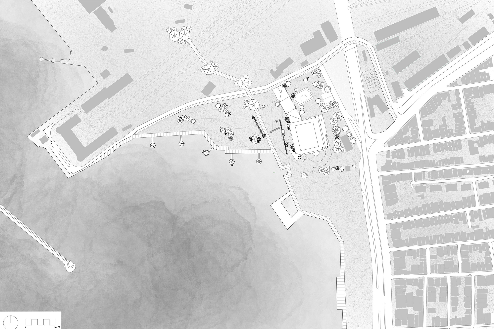
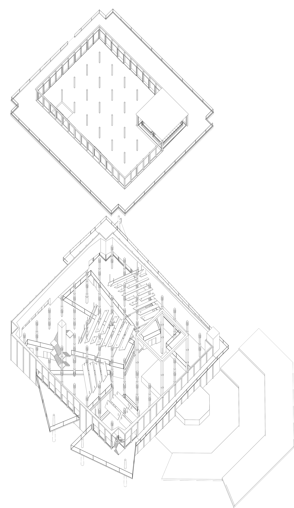
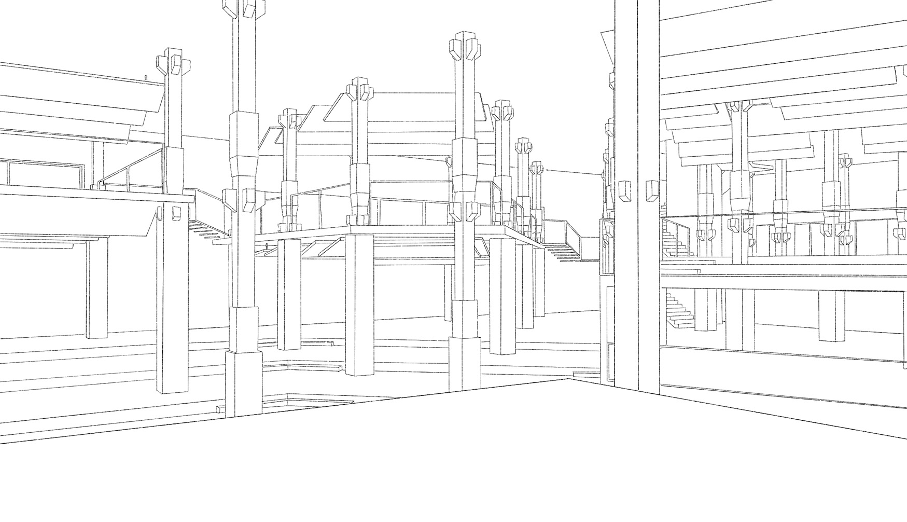
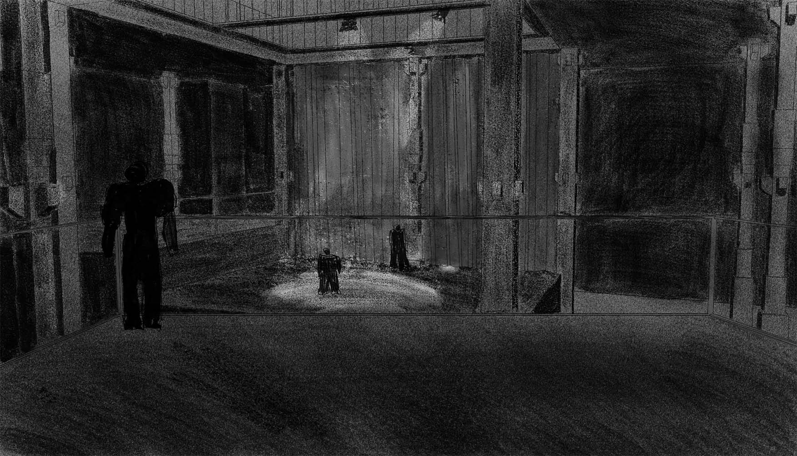

Haydarpasa, Kadıköy, Istanbul
Redefining Haydarpasa means rethinking the neighborhood around pedestrian movement and a slower pace of life, leaving space for relaxation. Modules are articulated to enable new uses, centered on the appreciation of heritage, with views over the landscape. The ET VE BALIK warehouse is part of this historic heritage to be preserved. Following a structural examination, the project proposes the construction of platforms that can be lived in centered on the stage or independently. Sound absorbers and a double envelope improve the room's acoustics. The attic provides a plateau open to the landscape and its distinctive elements, such as the rail way station or the mosque, but also to the stage structure. However, it can be divided with curtains, offering a wider range of use
Haydarpasa, Kadıköy, Istanbul
Redéfinir Haydarpasa implique de repenser le quartier autour des déplacements piétons et d’un rythme de vie plus lent, laissant la place à la détente. Les modules sont articulés pour permettre de nouveaux usages, centrés sur la valorisation du patrimoine, avec des vues sur le paysage. L’entrepôt ET VE BALIK fait partie de ce patrimoine historique à préserver. Après un examen structurel, le projet propose la construction de plateformes à s’appropriées, se vivant centrées sur la scène ou de manière indépendantes. Des suspensions et une double enveloppe améliorent l’acoustique de la salle.
L’attique est un plateau ouvert sur le paysage et ses éléments distinctifs, tels que la gare ou la mosquée, mais aussi sur la structure de la scène. Cependant, il peut être divisé par des rideaux, ce qui offre une plus grande variété d’utilisations.
 More infos
More infos
student project
2024
Istanbul, Türkiye
teacher : Derin Öncel
 Plus d'infos
Plus d'infos
projet étudiant
2024
Istanbul, Turquie
enseignant : Derin Öncel